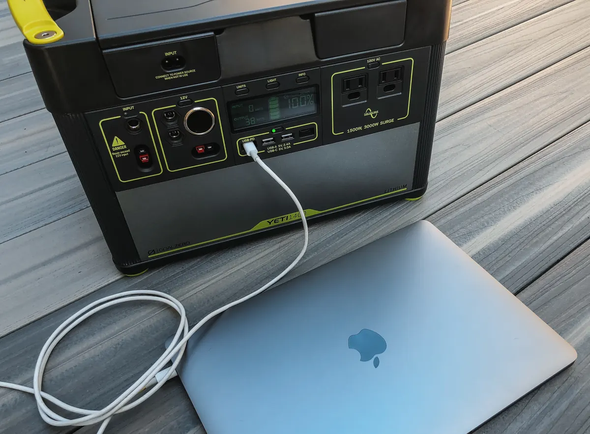

EcoFlow Delta 2 vs Bluetti AC180: cuál comprar en 2026
Misma potencia de salida, batería de la misma química y precio parecido. Sobre el papel son casi la misma estación; en la furgoneta no se parecen tanto.
Contiene enlaces de afiliado: si compras a través de ellos recibimos una comisión sin coste adicional para ti. Cómo decidimos nuestras recomendaciones.
Las cifras enfrentadas
| Especificación | EcoFlow Delta 2 | Bluetti AC180 |
|---|---|---|
| Capacidad | 1.024 Wh | 1.152 Wh |
| Salida continua | 1.800 W | 1.800 W |
| Pico | 2.700 W (X-Boost) | 2.700 W (Power Lifting) |
| Química | LiFePO4 | LiFePO4 |
| Ciclos | 3.000 al 80 % | 3.500 al 80 % |
| Entrada solar máx. | 500 W | 500 W |
| Ampliación de batería | Sí, hasta ~3 kWh | No |
| Peso | 12 kg | 16 kg |
Datos de ficha oficial de fabricante.
Capacidad: gana la AC180, pero menos de lo que parece
Los 128 Wh extra de la Bluetti son un 12 % más de autonomía. Traducido a algo útil: unas tres horas más de frigorífico de compresor, o dos cargas completas de portátil. No es despreciable y normalmente cuesta lo mismo o menos.
El matiz está en la ampliación. La Delta 2 acepta una batería externa que la lleva a unos 3 kWh; la AC180 no acepta ninguna. Si dentro de un año quieres el doble de autonomía, con la Bluetti tendrás que vender la estación y empezar de cero.
Carga y ruido: gana la Delta 2
Las dos cargan muy rápido desde la red y las dos hacen ruido al hacerlo, porque mover 1.200 W hacia una batería genera calor. La diferencia práctica es el control: la aplicación de EcoFlow permite fijar la potencia de carga en vatios, así que puedes bajarla a 300 W para dormir y subirla a máximo cuando tengas prisa. La Bluetti ofrece un modo silencioso, pero con menos granularidad.
Esto importa más de lo que suena si duermes al lado de la estación. Una carga rápida nocturna en un espacio de seis metros cuadrados es motivo suficiente para no comprar según el modelo.
Entrada solar y uso off-grid
Ambas admiten hasta 500 W de entrada solar, lo que significa que con dos paneles de 220 W recargas por completo cualquiera de las dos en un día de verano. Con la media anual de 4 horas de sol pico en España y un rendimiento del 75 %, 440 Wp te dan unos 1.320 Wh diarios: suficiente para llenarlas desde vacío.
Si no sabes cuántos vatios-pico necesitas, la calculadora te lo dice a partir de tus aparatos y tu zona. Y si quieres entender la fórmula, lo explicamos en cuántos paneles solares necesito.
Peso y formato
12 kg contra 16 kg. Si la estación vive fija en un mueble bajo el asiento, los cuatro kilos son irrelevantes. Si la sacas para usarla en la mesa de camping, la cargas en una mochila de viaje o la mueves entre casa y furgoneta, la Delta 2 es notablemente más manejable. Medido por vatio-hora transportado, la EcoFlow entrega 85 Wh/kg y la Bluetti 72 Wh/kg.
Veredicto según tu caso
- Camper de uso frecuente, la mueves y puedes ampliar: EcoFlow Delta 2. Es la que recomendamos por defecto.
- Instalación fija y prioridad al precio por vatio-hora: Bluetti AC180.
- Vas a cocinar con inducción a diario: ninguna de las dos. Sube a 2.000 W de salida con una Jackery 1000 Plus o similar.
Ver precio de la Delta 2 → Ver precio de la AC180 →
Preguntas frecuentes
¿Cuál tiene más capacidad?
La Bluetti AC180, con 1.152 Wh frente a 1.024 Wh. Son unas tres horas más de frigorífico de compresor.
¿Cuál se carga más rápido desde la red?
Las dos rondan los 45-50 minutos hasta el 80 %. La ventaja real de la Delta 2 es poder limitar la potencia de carga por aplicación para reducir el ruido.
¿Puedo usarlas como SAI para el ordenador?
Sí, ambas tienen función de respaldo con conmutación rápida. Para equipos sensibles como un CPAP, verifica el tiempo de conmutación en la ficha antes de confiar en ella.
¿Se pueden cargar mientras se usan?
Sí, las dos admiten paso de corriente y carga simultánea, incluso combinando red y solar.
Redacción de Estacionportatil. Comparamos fichas oficiales y pruebas publicadas, y lo contrastamos con uso real en furgoneta. Nuestra metodología. Última revisión: septiembre de 2026.